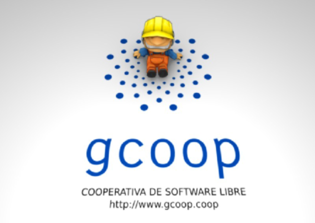

Cooperativismo y Software Libre en FLISOL Buenos Aires
ABSOLUTELLY NO WARRANTY | CC-BY-SA | OSiUX | .git
Este año en el Festival Latinoamericano de Instalación de Software Libre de Buenos Aires, pude dar una charla de Cooperativismo y Software Libre. Básicamente se comentó como funciona una cooperativa y específicamente como trabajamos en gcoop uniendo el mundo del software libre y el cooperativismo, está disponible la presentación:
